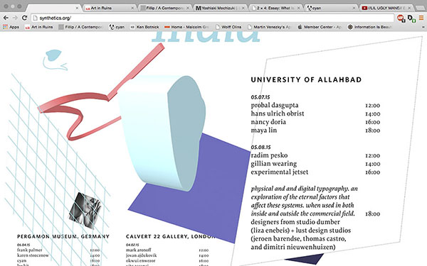
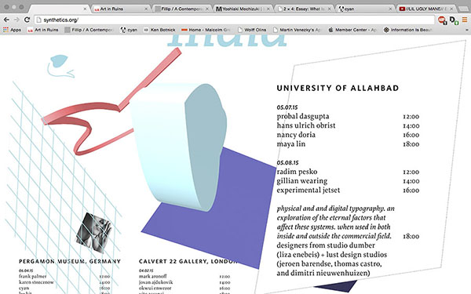

Synthetics
Systems autonomy will come from re-contextualization, repetition, while maintaining integrity of the original system, allowing it to be “contained” and replicated for the sake of convenience.
Synthetics is an evaluation of the inherited systems (language) that dictate function in an era of rapid globalization, addressing how various artists and designers are dealing with the external (commercial) and internal (personal) parameters that these systems establish, while considering the historical context that has shaped their construction and deconstruction.
FORM: Form will be created from a basic line. in creating a shape, only four lines may be used. The line may be warped. the line may be extruded. The line may shift between planes. A shape may breach the surface, but the incident must be isolated.
SPACE: Space shall be constructed in multiple parts using the shapes built under the set parameters. Shapes will have the capacity to render depth, fragment perceived depth in the space, act on a surface above the percieved space, and intersect between various planes.
SYMBOLS: To ground the system, an icon, index, and symbol will be used along with a grid. Each image/shape will have the same parameters as dictated by form and space.
COLOR: Black, white, and grey will be used as accents. The three remaining colors will be interchangeable, changing roles as dictated by the event location, specifically within the visual grid and index.
TEXT: Body text/details will be using proforma and whitney, proforma being used for the main text and whitney acting as a highlight. Text will act as a continuous element throughout the system, maintaining the same perceived visual hierarchy in all iterations. Text does not need to operate at the surface and may move back into space.


 
